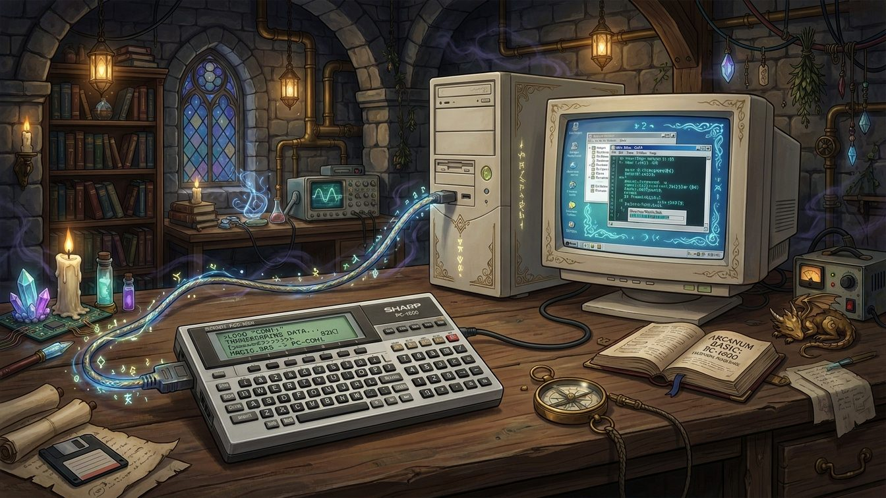
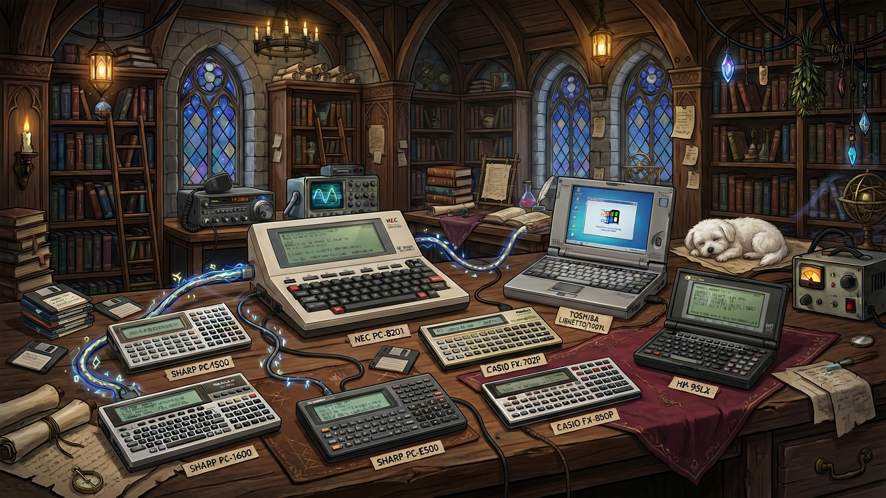

SerComet moves BASIC programs between your PC and your pocket computer: Sharp, Casio, TRS-80, NEC and more. No cassette tape, no retyping.

A simple window, one serial cable, and your old pocket machine joins the modern desktop.
Pick a program and press Send, or start Save on the pocket computer and SerComet files it for you.
Edit your BASIC as plain text on the PC; SerComet converts it to the machine's own format and back.
Garbage on the line? It tells you the baud rate is wrong and whether to raise or lower it.
Free for personal, non-commercial and educational use.
Choose your computer in the Target box and SerComet sets up the right way to talk to it. Saver/Loader programs for the PC-1500 and PC-1600 are included.

Downloads, instructions and the source code live on GitHub. Questions, ideas and bug reports are always welcome.